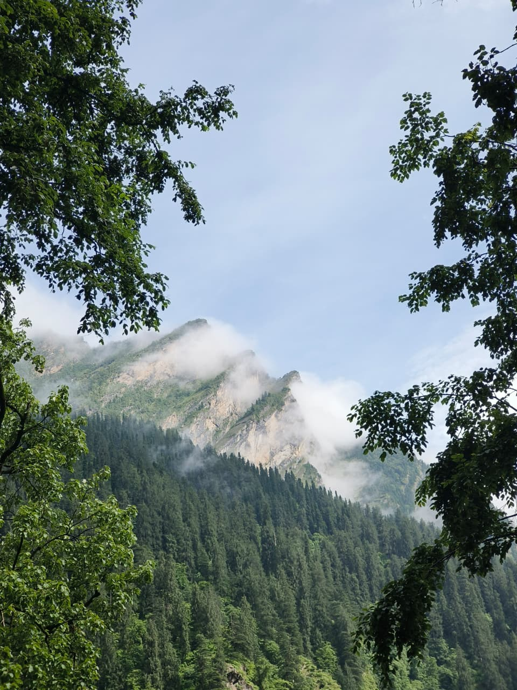
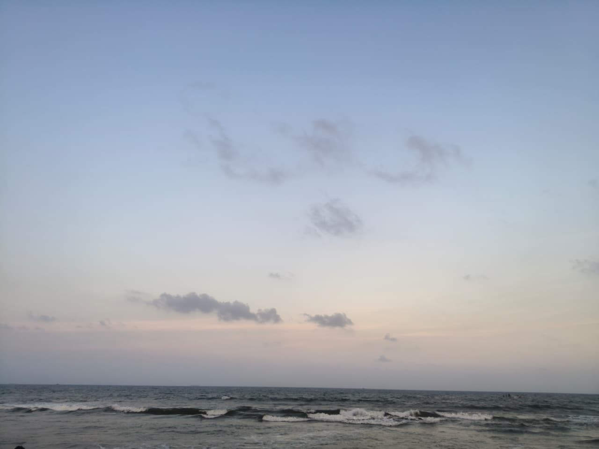

Sikkim
Khangchendzonga
India's first fully organic state. The national park around the world's third-highest peak is a UNESCO World Heritage Site.
Best time: Mar–May, Oct–Dec
Homestays in Spiti, root bridges in Meghalaya, nesting turtles on the Odisha coast. Find places where your visit helps the land and the people who live on it.
कहाँ जाएँ
Twelve places in India that are getting green travel right. Pick a region to narrow the list.
Sikkim
India's first fully organic state. The national park around the world's third-highest peak is a UNESCO World Heritage Site.
Best time: Mar–May, Oct–Dec
Himachal Pradesh
A high cold desert of monasteries and mud-brick homes. Stay with families and travel with community-run groups.
Best time: Jun–Sep
Uttarakhand
An alpine meadow that blooms after the monsoon rains, part of a UNESCO World Heritage Site with Nanda Devi National Park.
Best time: Jul–Aug (open Jun–Oct)
Meghalaya
A Khasi village often called the cleanest in Asia, close to living root bridges grown by hand over generations.
Best time: Oct–Apr
Assam
A UNESCO-listed national park that is home to about two-thirds of the world's greater one-horned rhinos.
Best time: Nov–Apr (closed in the monsoon)
Nagaland
Known as India's first green village. The Angami community here stopped hunting in 1998 and now protects its forests.
Best time: Oct–May
Arunachal Pradesh
Home of the Apatani people, who farm fish and rice together in the same flooded fields without heavy machinery.
Best time: Mar–Oct
Kerala
Where Kerala's responsible tourism programme started. Many village tours and homestays are run by local families.
Best time: Sep–Mar
Karnataka
Shade-grown coffee estates in the Western Ghats, where the forest canopy is kept over the coffee plants.
Best time: Oct–Mar
West Bengal
The largest mangrove forest in the world, shared with Bangladesh, and home to the Royal Bengal tiger. Explore by boat.
Best time: Sep–Mar
Odisha
Asia's largest brackish water lagoon. Watch Irrawaddy dolphins and huge flocks of winter migratory birds.
Best time: Nov–Feb
Andaman & Nicobar
Coral reefs and quiet beaches. Use reef-safe sunscreen and pick dive centres that never touch the coral.
Best time: Nov–Apr
कब जाएँ
India has many climates at once. When it is too hot in the plains, the mountains are at their best, and the monsoon that floods one coast leaves the rain-shadow valleys dry.
| Season | Months | Good places to go | Keep in mind |
|---|---|---|---|
| Winter | Dec–Feb | Kerala, Coorg, Andamans, Kaziranga, Sundarbans, Chilika Lake | High Himalayan passes are closed by snow. Winter fog can delay trains in North India. |
| Summer | Mar–May | Sikkim (rhododendrons in bloom), lower Himachal valleys, Meghalaya, Ziro Valley | The plains get very hot. Book hill stays early, as these are peak months. |
| Monsoon | Jun–Sep | Spiti and Ladakh (rain-shadow areas), Valley of Flowers, Western Ghats | Landslides close hill roads. Many national parks and tiger reserves close. |
| Post-monsoon | Oct–Nov | Sikkim, Uttarakhand treks, Khonoma, Coorg, Meghalaya | Clear mountain views and green hills. Festival season, so trains fill up fast. |
यात्रा से पहले
Small habits that make a trip around India lighter on the land.
Indian Railways reaches most of the country and usually emits far less per person than a flight. Book early on IRCTC.
Refill at water vending machines found at many big stations, or ask your homestay for filtered water.
Sikkim and Himachal Pradesh have strict rules on single-use plastic. Keep a cloth jhola in your bag.
Seasonal food from the region travels fewer kilometres and keeps money with local cooks.
Your money goes straight to the family hosting you, and you learn the place from people who live there.
Remove your shoes, dress modestly, and ask before you photograph people or rituals.
A guide from the village knows the trail, the weather, and the stories, and the fee stays in the community.
Never feed monkeys or other animals, keep your voice low on safari, and skip any ride or show using animals.
Many hill towns and islands run short of water. Take bucket baths and reuse towels.
आना-जाना
सामान की सूची
Tick off each item as you pack.
हरित त्योहार
India celebrates all year. Here is how to join in without leaving a mess behind.
October or November
Light clay diyas and skip the firecrackers. Air quality in many North Indian cities is already poor at this time of year.
March
Play with natural colours made from turmeric, flowers, and beetroot, and go easy on the water.
August or September
Choose idols made of natural clay, and immerse them in the artificial tanks many cities set up to protect lakes and the sea.
1–10 December, Nagaland
A celebration of Naga tribes at Kisama Heritage Village. Carry your waste back and buy crafts straight from the makers.
यात्रा कथाएँ

Himachal Pradesh
The pine and deodar forests of Himachal are some of the most beautiful in India, and the busiest trails now see a lot of litter. Here is how to trek them cleanly.

Odisha & Tamil Nadu
Every winter, Olive Ridley sea turtles come ashore on the Bay of Bengal to nest. You can watch, if you know how to keep your distance.
At Rushikulya and Gahirmatha in Odisha, thousands of turtles can nest together, usually between February and April. In Chennai, volunteer groups run night turtle walks during the nesting season to move eggs to safe hatcheries. Go with these groups, use no torches or flash near the turtles, and never touch the hatchlings as they head to the sea.
काम के शब्द
India has 22 official languages, and Hindi isn't spoken everywhere. A few local words go a long way.
सवाल-जवाब
Usually not. Trains, state buses, homestays, and local food often cost less than flights, big hotels, and restaurant chains. Some specialist eco-lodges cost more, but they are not the only option.
It's best not to. Drink filtered or boiled water and refill your own bottle at homestays, cafés, and station water machines instead of buying plastic bottles.
Yes. Indian travellers need an Inner Line Permit (ILP) for Arunachal Pradesh, Nagaland, Mizoram, and Manipur. Foreign travellers need a Protected Area Permit for some areas, including parts of Sikkim. Check the official state government website before you go, as rules change.
No. Many national parks and tiger reserves close during the monsoon, roughly from July to September, and some zones stay closed for longer. Always check the park's official website for dates.
Ask simple questions: Who owns it? Do they hire people from the area? How do they handle waste and water? Do they use solar power? A genuine eco-stay will be happy to answer.
It can be, if you choose well. Rain-shadow areas like Spiti and Ladakh stay dry, but hill roads in many other places see landslides. Check the weather forecast and road updates, and keep spare days in your plan.
अतिथि देवो भव
“The guest is god.” A good guest gives something back.
EcoVibes is a personal project by devKiNGCRiC about travelling India responsibly: places, stays, and habits that protect India's forests, rivers, and coasts, and support the communities who look after them.
संपर्क करें
Have a question, a correction, or a green travel story from India? Send a message and it will open in your email app.